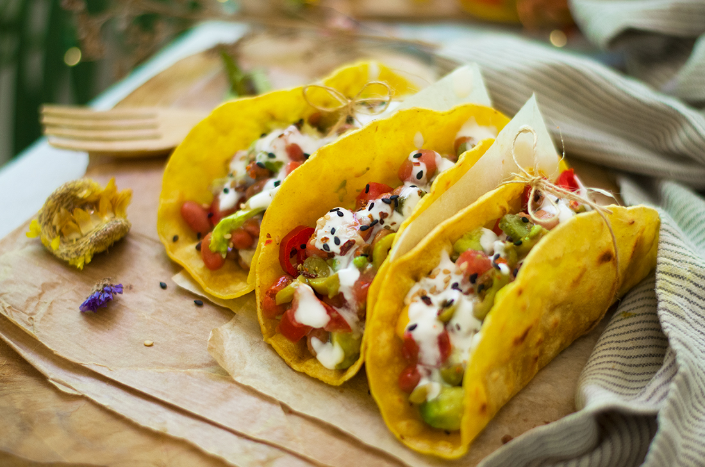

Tacos

ingredientes
- 12 tortillas de maíz
- 500g de carne molida de res o pollo
- 1 cebolla picada
- Cilantro freco al gusto
- Salsa al gusto
- Lima (opcional)
- Sal y pimienta al gusto
Pasos
- En una sartén grande, cocina la carne molida con sal y pimienta hasta que esté bien cocida
- En otra sartén, calienta las tortillas de maíz hasta que estén suaves y calientes
- Coloca la carne cocida sobre las tortillas calientes
- Agrega cebolla picada, cilantro fresco y salsa al gusto
- Opcionalmente, arega unas gotas de jugo de lima para darle un toque fresco
- Sirve y disfruta tus tacos con una bebida refrescante
Home